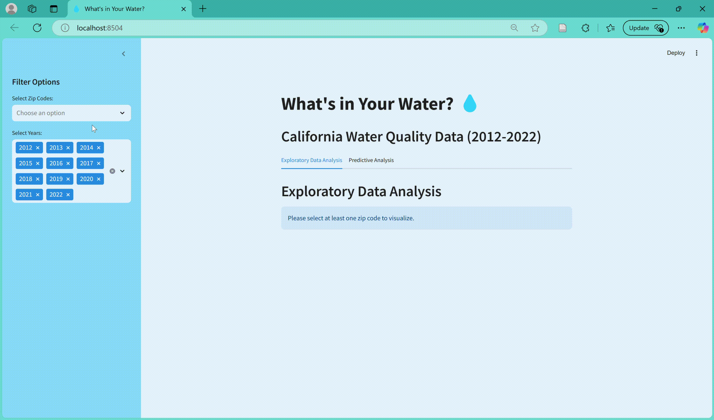
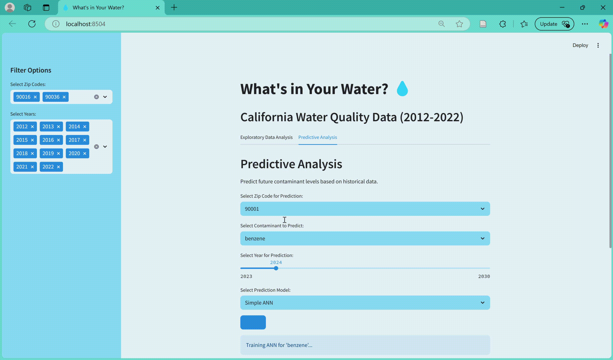

I turn messy health and environmental data into clear, defensible answers. My work combines statistical modeling (Poisson regression, survival analysis, fixed effects), reproducible analysis in R and Python, and applied AI tools that make data easier to query and act on.
An illustrative epidemic curve, the chart that started my interest in public health data.
Projects
Environmental health · Data app with prediction
What’s in Your Water? California water quality, 2012–2022
An interactive dashboard for exploring contaminant levels by zip code and year, with a second tab that forecasts future levels from historical data.

Exploratory tab: filter by zip code and year.

Predictive tab: choose a zip code, contaminant, year (2023–2030), and model.
Built two workflows in one app: exploratory analysis of historical measurements and a forecasting tool for individual contaminants, such as benzene.
Lets the user pick the prediction model, including a simple neural network trained on demand for the selected zip code and contaminant.
Data source and size: California State Water Resources Control , Division of Drinking Water. Between the years 2011 and 2022 19,586,330 samples were
collected and reported to the DDW and used for this analysis.
Validation: Forecasts were limited to years where data was present and therefore checked by comparing forecast to known level.
Key finding: Users were able to see in real time their water contaminants levels over the past 11 years, selecting the analyte they were most interested in.
A customer-service chatbot that answers policy questions from company PDFs and looks up live inventory and product data.
Built a retrieval-augmented generation (RAG) pipeline: PDF ingestion, 600-character chunks with 100-character overlap, and a persistent ChromaDB vector index.
Added function-calling tools backed by a read-only DuckDB database (stock levels, prices, warranties), run through a multi-step agent loop capped at five iterations.
Falls back to grounded retrieval for policy questions, and is instructed to say it doesn’t have enough information rather than guess.
Switches between Azure OpenAI and fully local models (Gemma with MiniLM embeddings) through environment variables, with no hard-coded keys.
Tested with multi-part questions (price and warranty together) and out-of-scope requests.
Epidemiology project - Water Quality and Mortality
Drinking water contamination as a population-wide determinant of mortality
in California
Drinking water contamination, is a known determinant of adverse health outcomes, and remains
widespread and inequitably distributed amidst aging infrastructure. The extent to
which existing concentrations of contaminants at the public water system level directly affect
population health remains poorly understood.
Large-scale data analysis of 20 million water
samples from 2012-2022 in California, assessing the impact of 55 different water contaminants
on all-cause mortality.
To estimate the association between water analyte concentrations and mortality rates, a two-way
fixed effects regression model was employed. Each analyte was modeled with zip-code and year
included as fixed effects to adjust for time-invariant and temporal confounders.
Surfactants were associated with increased mortality, with each standard deviation increase in
concentration associated with 0.46% (95% Confidence Interval: [0.14, 0.79]) increases in
all-cause mortality
Smaller apps in the project repository: a Quick Commute Planner for the London Underground (Streamlit and the TfL API), a Global GDP Explorer, and a BMI calculator.
Skills and tools
Languages
R
Python
SQL
Statistical modeling
Poisson regression
Fixed effects
Survival analysis
Machine learning
Data wrangling
dplyr and tidyr
pandas
data.table
DuckDB
Visualization and apps
ggplot2
Plotly
Matplotlib
Streamlit
Spatial analysis
sf
tmap
leaflet
QGIS
Applied AI
RAG pipelines
LLM tool-calling
Vector databases
Prompt design
Workflow
Git and GitHub
Jupyter
VS Code
Reproducible environments
Education
Master of Health Science, Epidemiology
Johns Hopkins University
Get in touch
I’m open to quantitative research, data science, and epidemiology roles, including contract work. Email or LinkedIn is the fastest way to reach me.